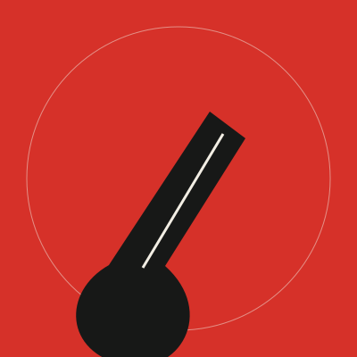
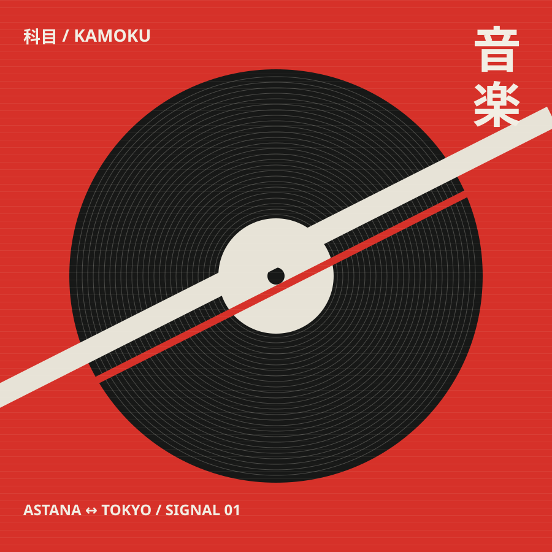
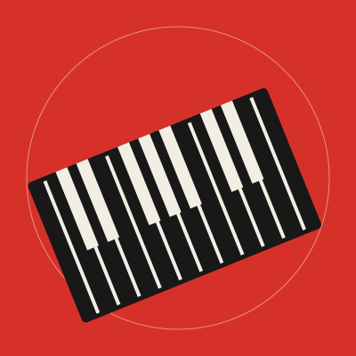

01Guitar
Nursultan
Creates the main riffs and gives KAMOKU its energetic sound.
01 / A different frequency
Three people. One sound. Japanese-inspired alternative music built on restless guitars, late-night keys and a pulse that won't sit still.

01 / The band
Made in Astana.
Inspired by everywhere.
KAMOKU is a Japanese-inspired band project built around energetic guitar, keyboard melodies and powerful rhythm. We combine different ideas and personalities into one sound.
From the bright rush of Neon Rain to the space between notes in After 2AM , we follow the feeling.
Meet the people behind it ↓02 / The people behind the sound

01Guitar
Creates the main riffs and gives KAMOKU its energetic sound.

02Keyboard
Adds atmosphere and melodic layers to every track.
Drums
Builds the rhythm and keeps the band’s sound fast and powerful.
03 / Sound archive
Eight tracks. Different states of mind.
Explore the catalogue below.
Try another title or choose “All genres”.
Catalogue only: fictional tracks, no audio recordings available. Expand a track to read its story.
05 / Good to know
This is a fictional band project.
Explore the music catalogue or try a demo booking.
The project is based in Astana, Kazakhstan, and was created in 2026.
Our sound combines alternative rock, keyboard melodies and electronic elements.
No. This is a student project: booking is a browser-only demonstration. There are no real tickets, payments or emails. Try it on the Live page.